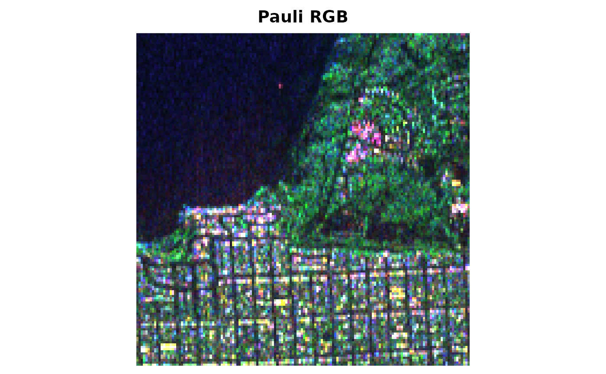

SARImage stores a SAR image as an array of dimension
nrow x ncol x layers. Two types are supported:
"polsar"a complex array whose
p = m(m+1)/2layers are the distinct entries of the \(m \times m\) covariance matrix of each pixel, in the order \(C_{11}, \ldots, C_{mm}, C_{12}, C_{13}, \ldots\) (for \(m = 3\):HH, HV, VV, HH.HV*, HH.VV*, HV.VV*), as in SanFrancisco150;"intensity"a real (or real-valued complex) array whose layers are intensity channels.
The class offers cropping, Pauli colour composition, plotting, local (moving-window) features for classification, entropy maps and conversion to tibbles.
Public fields
dataThe image array.
type"polsar"or"intensity".channelsNames of the intensity channels.
looksNominal number of looks (optional,
NULLif unknown).
Active bindings
nrowNumber of rows (read-only).
ncolNumber of columns (read-only).
mNumber of channels; matrix order for PolSAR images (read-only).
Methods
SARImage$new()
Create a SAR image.
Usage
SARImage$new(data, type = NULL, looks = NULL, channels = NULL)Arguments
dataArray
nrow x ncol x layers(a matrix is treated as a single intensity channel).type"polsar"or"intensity". Guessed whenNULL: complex arrays withm(m+1)/2layers (m >= 2) and non-zero imaginary parts are PolSAR images.looksNominal number of looks.
channelsNames of the intensity channels.
SARImage$pixel()
Observation at a pixel: the Hermitian covariance matrix (PolSAR) or the vector of intensities.
SARImage$window()
Observations inside a square window centred at a pixel
(truncated at the borders). Returns an n x layers matrix.
SARImage$pauli()
Pauli RGB composition scaled to [0, 1] (PolSAR images with three channels); for other images the first three intensities are used.
SARImage$plot()
Plot the image (Pauli composition or one channel in dB).
Usage
SARImage$plot(type = c("pauli", "intensity"), channel = 1, main = NULL, ...)Arguments
type"pauli"or"intensity".channelChannel for
type = "intensity".mainTitle.
...Passed to
graphics::rasterImage().
SARImage$features()
Local features for classification; see sar_features().
Usage
SARImage$features(window = 3, type = c("all", "gaussian", "wishart"))Examples
img <- SARImage$new(SanFrancisco150, looks = 4)
img
#> <SARImage> 150 x 150 PolSAR (3 x 3 covariance)
#> channels: HH, HV, VV
#> looks: 4
#> mean HH = 0.1735
#> mean HV = 0.04224
#> mean VV = 0.147
small <- img$crop(1:40, 1:40)
dim(small$intensities())
#> [1] 40 40 3
small$pixel(1, 1)
#> [,1] [,2]
#> [1,] 0.0049587982+0.0000000000i 0.0006074079-0.0001119103i
#> [2,] 0.0006074079+0.0001119103i 0.0003967038+0.0000000000i
#> [3,] 0.0113060614-0.0013223464i 0.0011964096-0.0005374640i
#> [,3]
#> [1,] 0.01130606+0.001322346i
#> [2,] 0.00119641+0.000537464i
#> [3,] 0.02823210+0.000000000i
head(small$features(window = 3))
#> # A tibble: 6 × 20
#> row col mean_HH mean_HV mean_VV cov_HH_HH cov_HH_HV cov_HH_VV cov_HV_HV
#> <int> <int> <dbl> <dbl> <dbl> <dbl> <dbl> <dbl> <dbl>
#> 1 1 1 0.00596 0.000472 0.0233 0.00000666 8.51e-8 2.08e-5 9.50e-9
#> 2 2 1 0.00588 0.000528 0.0224 0.00000536 -2.69e-8 1.74e-5 1.68e-8
#> 3 3 1 0.00526 0.000556 0.0206 0.00000457 6.27e-8 1.60e-5 1.43e-8
#> 4 4 1 0.00485 0.000490 0.0190 0.00000213 1.74e-8 6.28e-6 3.16e-8
#> 5 5 1 0.00427 0.000413 0.0177 0.000000935 3.21e-8 1.79e-6 1.56e-8
#> 6 6 1 0.00400 0.000462 0.0159 0.000000755 -1.35e-8 4.27e-7 4.03e-8
#> # ℹ 11 more variables: cov_HV_VV <dbl>, cov_VV_VV <dbl>, c11 <dbl>, c22 <dbl>,
#> # c33 <dbl>, c12_re <dbl>, c12_im <dbl>, c13_re <dbl>, c13_im <dbl>,
#> # c23_re <dbl>, c23_im <dbl>
# \donttest{
img$plot()

# }